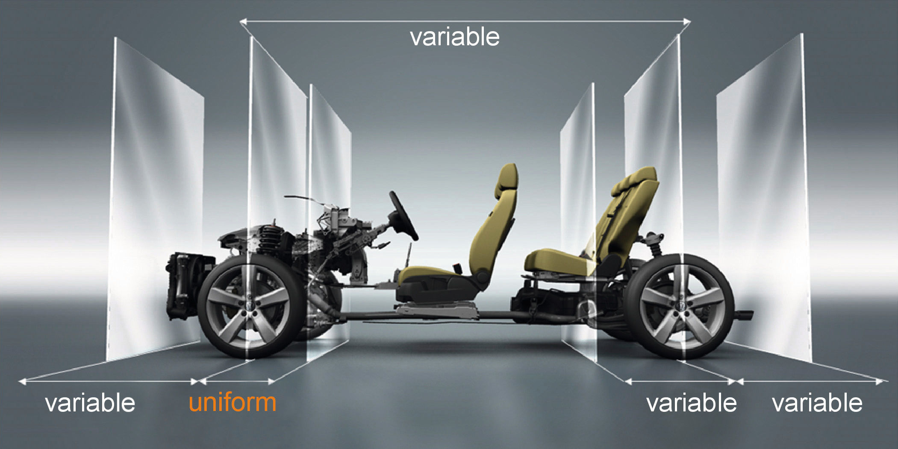
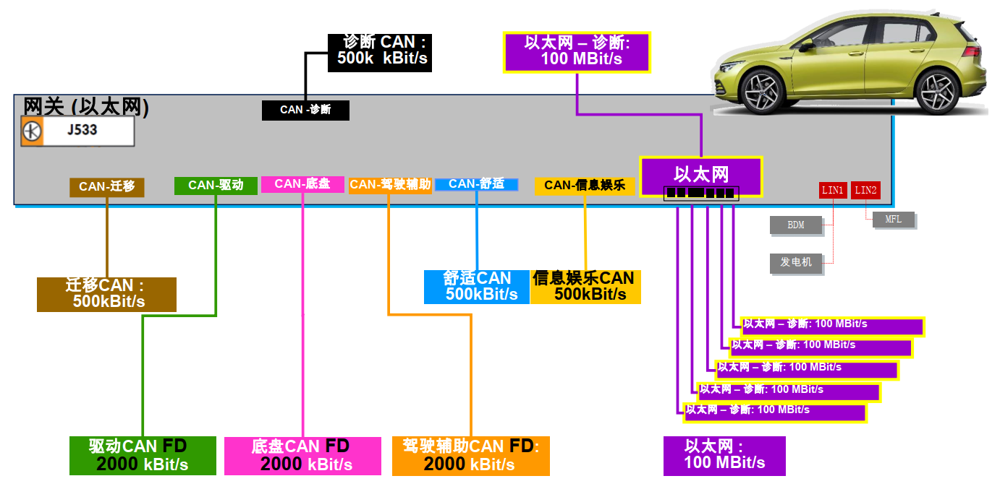
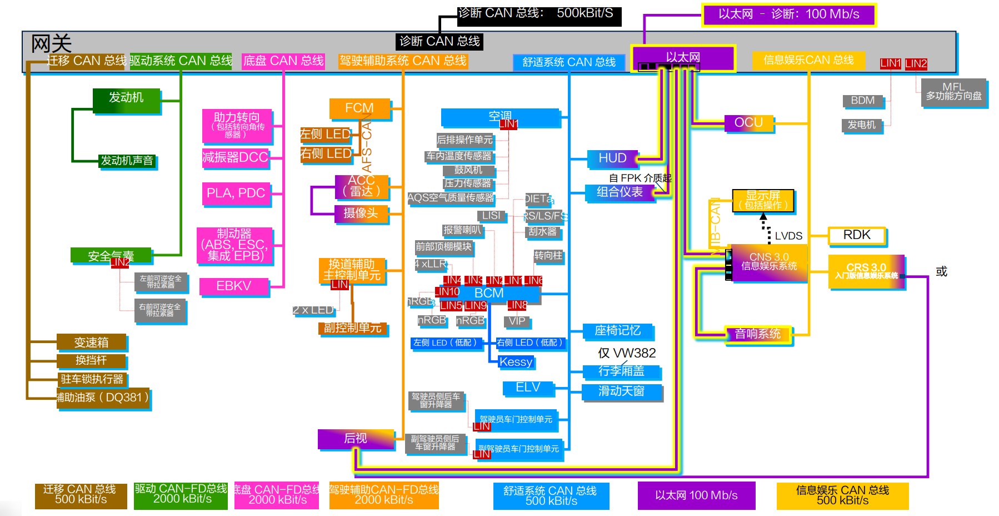
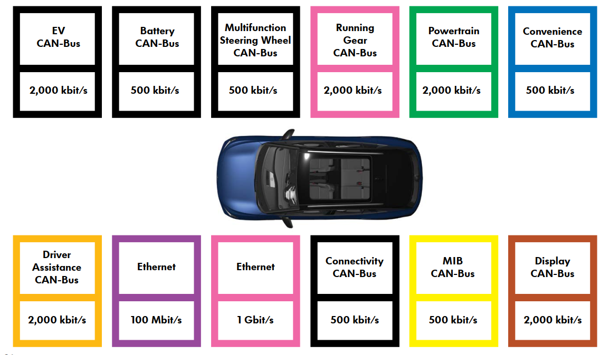
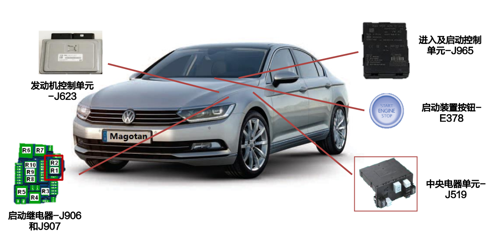
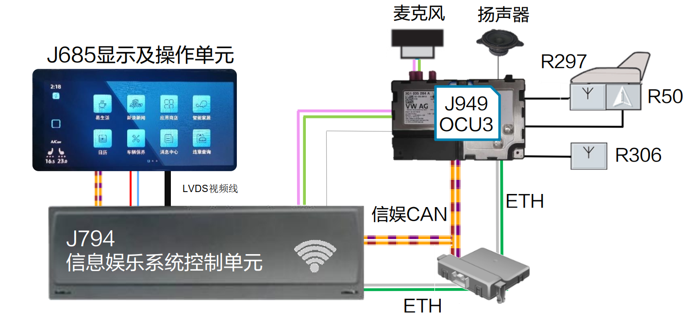
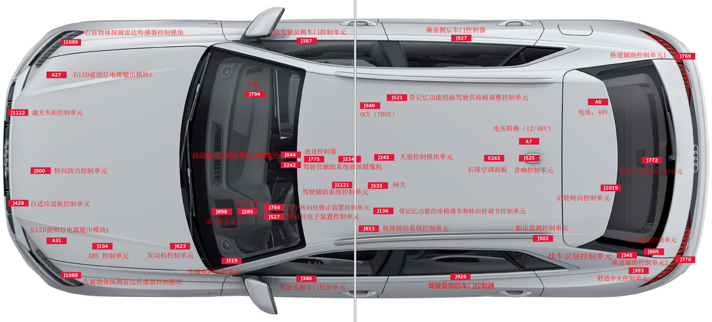
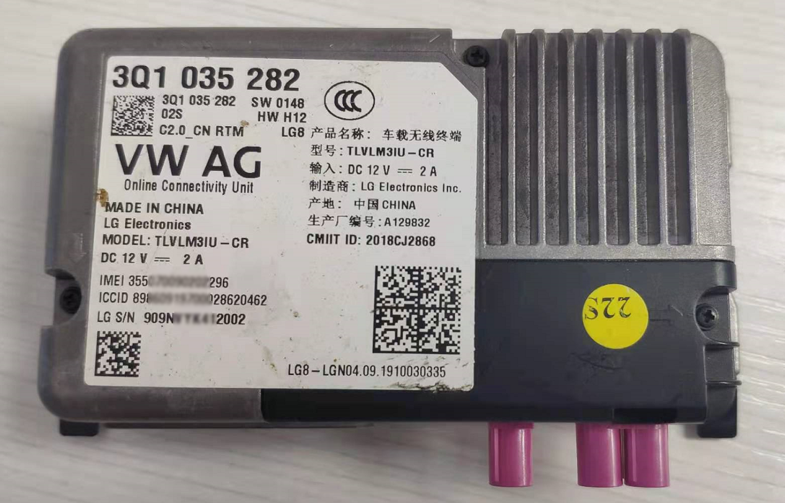
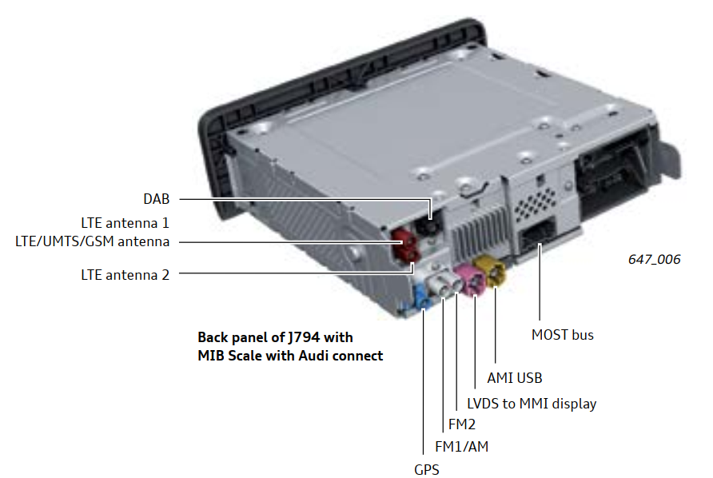

车联网安全基础知识之大众集团汽车电子电气架构
大众集团汽车电子电气架构
大众汽车模块化平台
大众旗下有 MQB、MLB、MSB、MMB、MHB、MEB、NSF、PPE、SSP，其中 MHB 平台已被并 入 MQB 平台。各平台均可覆盖不同级别车型，其中 MQB 平台所覆盖车型最广，截止 2020 年该平台产量将达到集团总产量 80%以上。
| 平台简称 | 技术特点 | 代表车型 |
|---|---|---|
| MQB | 横置发动机平台 | 主要生产经济型家用车，高尔夫、斯柯达明锐、全新帕萨特、POLO、途观等 |
| MLB(MLBevo) | 纵置发动机平台 | 奥迪 A4、A5、A6、A7、A8、Q5、Q8 |
| MSB | 前置发动机后驱平台 | 保时捷 Panamera、宾利欧陆 |
| MEB | 电动汽车平台 | MEB 平台覆盖车型从 A 级到 D 级，涵盖轿车、SUV、MPV 等，如 ID6 |
| MMB | 中置发动机平台 | 保时捷 911、保时捷 922、保时捷 550 等超跑车型 |
| MHB | 后置发动机小型车平台 | 该平台目前已被并入 MQB 平台，曾生产奥迪 R4、奥迪 R8 |
| NSF | 小型车平台 | 大众 UP、奥迪 A2、Microvan、 斯柯达 Citigo、西雅特 Mii 等车型 |
| PPE | 高端电动车平台 | 奥迪、保时捷、宾利等豪华品牌使用，奥迪A6 e-tron概念车 |
| SSP | 可扩展纯电平台 | 是 MQB、MSB、MLB、MEB 和 PPE 平台的延续 |
MQB
谈论汽车模块化平台绕不开的就是大众的 MQB 平台。MQB 是汽车模块化的开创者。
MQB 是大众集团最新的横置发动机模块化平台(Modular Querbaukasten)，简称 MQB。它于 2012 年开始取代大众上一代 PQ25、PQ35 和 PQ46 平台，该模块化平台目前已在大众、奥迪、斯柯达和西雅特这 4 个品牌中得到极为广泛的应用，并生产从 A00、A0、A 到B 四个级别的车型。
MQB 平台的组成部分是一个灵活的车辆架构。这个架构将车辆分为五个主要部分，核心部分在踏板和前轴车轮中心之间，这个核心部分的尺寸在所有车辆上都是相同的。其他尺寸根据设计理念不同进行设计，如轴距、轮距、车轮大小和座椅位置等都可以灵活变化。

车内网路结构
现在的汽车对于汽车总线带宽的要求越来越高，一条总线很多时候没办法满足整辆汽车的需求。于是汽车中采用了多种总线，包括 CAN、LIN、车载以太网等技术。相同的总线之下按照用途又做出了进一步划分。在 CAN 总线中对不同网络进行划分/隔离能够弥补 CAN 总线由于广播特性引发的安全问题，有效提升车内网络的安全性。不同网络的上的数据交互最终汇聚在网关(J533)上，网关对数据进行分析处理，转发到对应的网络中。网关是保障汽车内部网络通信的重要组件。
大众燃油车中总线分为以太网、LIN、驱动 CAN、底盘 CAN、辅助驾驶 CAN FD、舒适 CAN、信息娱乐 CAN、诊断 CAN、以太网等。在新车型中驱动 CAN、底盘 CAN 采用速率为 2000kBit/s 的 CAN-FD，老车型中常使用 500kBit/s 的 CAN。

不同的总线网络承担着不同的功能，各网络中连接的主要部件如下。
驱动（动力） CAN-FD：通信速率为 2000 kBit/s，动力 CAN 主要的部件是发动机和安全气囊。动力 CAN 汽车中最重要的网络之一。
底盘 CAN-FD：通信速率为 2000 kBit/s，底盘 CAN 连接助力转向、减震器、制动器（ABS、ESC、集成 EPB）、泊车辅助系统（PLA/PDC）、电子助力器(EBKV)等。
辅助驾驶 CAN-FD：通信速率为 2000 kBit/s，辅助驾驶 CAN 连接防撞预警系统(FCM)、 自适应前大灯系统(AFS)、雷达、摄像头、辅助换倒控制单元、后视等。
舒适 CAN：通信速率为500 kBit/s，舒适 CAN 连接空调、车身控制器(BCM)、无钥匙进入(kessy)、抬头显示（HUD）、组合仪表、座椅记忆、行李箱盖、滑动天窗、车门控制单元、报废车辆指令(ELV)。
信息娱乐 CAN：通信速率为500 kBit/s，信息娱乐 CAN 连接 OCU、显示屏、CNS3.0 信息娱乐系统、音箱系统等。
诊断 CAN：通信速率为500 kBit/s，OBD II 上CAN总线接口连接到网关的部分属于诊断 CAN。
以太网等：通信速率为100 MBit/s 或 1 GBit/s，以太网连接 OCU、HUD、CNS3.0 信息娱乐系统、音箱系统、组合仪表、后视等。

在电动汽车中除了上述燃油车中的网络结构外，还有电池 CAN 等。例如，MIB 平台下 ID.4(电动汽车)的车载网络使用情况如下。

重要系统的结构(部分)
上面是车内网络的概览，现在来看看具体的一些重要系统的结构。本文只会讲解各系统的组成结构，不会对控制单元进行详细讲解，后续会对重要的部件进行专题讲解。
启动控制系统
驱动控制系统是车辆最为核心的部分。启动控制系统其中包括发动机控制单元(J623)、进入和可控制单元(J965)、启动装置按钮(E378)、中央电气单元(J519)、启动继电器(J906/J907)。

车联网系统
做车联网安全最关注当然还是车联网系统，车联网系统中主要包括的部件有显示及操作单元(J685)、信息娱乐控制单元(J794)又称车机/IVI等、OCU/TBOX(J949)以及麦克风、扬声器、天线等模块。

模块化零部件
没有拆解过汽车，对车辆中各个部件的所处位置没有直观的感受。以下奥迪 Q8 控制器位置分布图。

上图包含了主要的控制器，如车机(J794)位于副驾驶员前侧；网关(J533)位于驾驶员座位下方；ABS(J104)位于车头右前方等 。对应的 MEB 网络拓扑结构（不含以太网）如下。

上图与MQB架构中的网络结构大体相似，可以看出零部件在不同平台上实现了共享，既模块化零部件。下面展示车联网中几个重要的零部件。
- OCU/TBOX(J949 )

- 车机(J794)

- 网关(J533)

总结
本文介绍了大众旗下的汽车模块化平台，对 MQB 平台的网络结构进行了梳理，此外初步介绍了模块化零部件。后续文章会较为详细的介绍车联网安全中重要模块的组成结构以及安全威胁等。
文中的 奥迪 Q8 控制器位置分布图标注花了比较长的时间，通过控制器的位置可以对车辆有更直观的感受。攻防的点在哪里，面对实在在的东西才好分析研究。以后有机会拆车在来与大家分享具体的零部件分布以网络拓扑结构（先在这里立下一个FLAG）。